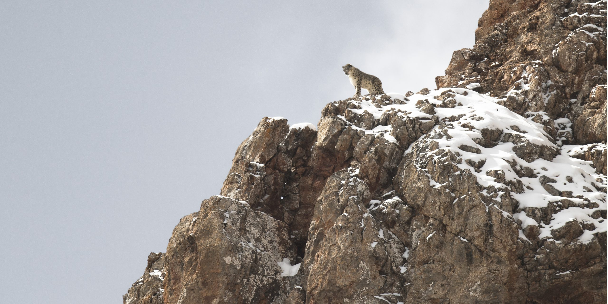
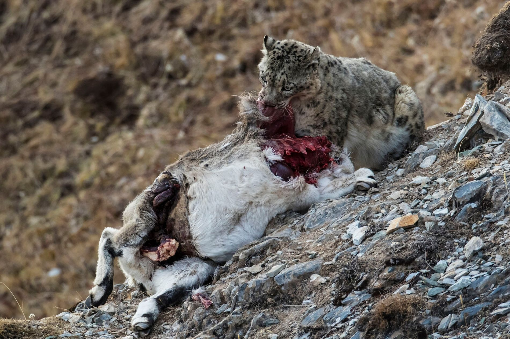
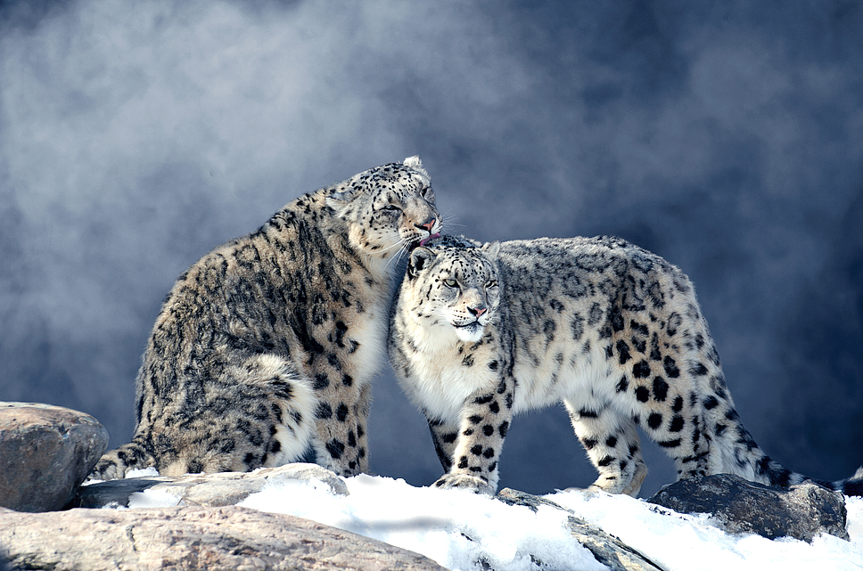
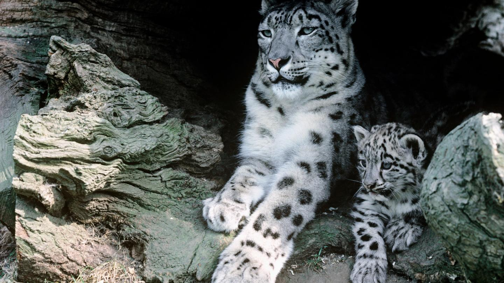
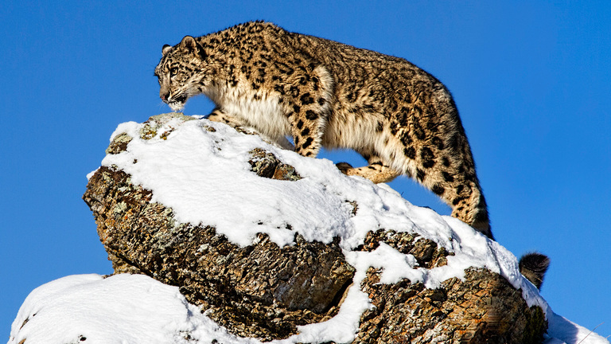
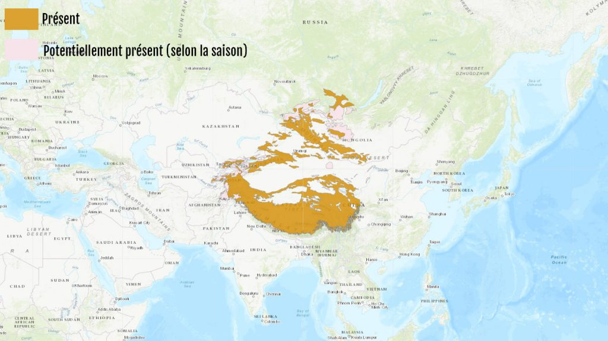

Les panthères des neiges sont des animaux solitaires qui chassent à l'aube et au crépuscule. De la Chine à la Mongolie, en passant par le Népal et le Pakistan, le territoire de la panthère des neiges est immense, il s’étend sur plus de 1 800 000 km². La Panthère des neiges suit les déplacements saisonniers de ses proies : elle descend dans les vallées et les forêts de conifères en hiver, et remonte dans les montagnes en été. La panthère des neiges est extrêmement bien adaptée à son habitat naturel de haute montagne et au climat très froid. Elle se rencontre à de très hautes altitudes, entre 2500 mètres et 5400 mètres, mais également à pas plus de 500 mètres en Russie. Grâce à sa splendide fourrure tachetée elle est presque invisible dans son environnement, se confondant avec les rochers enneigés. La panthère des neiges peut faire des pointes de vitesses à 55 km/h et elle peut sauter jusqu’à 6 voire 8 m de haut.

Dans les parcs zoologiques, elle mange 6 à 27 kg de viande par semaine, usuellement 1,5 kg par jour. Les proies de la panthère des neiges sont essentiellement des ongulés (le grand bharal, l’ibex de Sibérie, l’urial, le markhor, l’argali), qui peuvent être jusqu’à 3 fois plus gros qu’elle, mais elle se nourrit également de petits animaux des montagnes comme la marmotte de l’Himalaya, la perdrix, le faisan, le lièvre, la souris, le panda roux et même les petits pandas géants. Une grande partie de l’alimentation de cette panthère est composée de végétaux (brindilles et herbes), qui représentent chez certaines populations près de 50 % de leur alimentation(les scientifiques suggèrent que cela permettrait à la panthère de chasser certains parasites).

Après 90 à 105 jours de gestation, un à sept petits (deux à trois en moyenne) naissent entre avril et juin. En moyenne, la femelle a une portée tous les deux ans. La mère s'occupe seule des petits et subvient à leur alimentation. Il est nécessaire que la tanière où se cachent les petits soit proche d'une importante source de nourriture, afin que la mère puisse nourrir sa progéniture sans trop s'en éloigner. Les jeunes grandissant, la quantité de nourriture nécessaire pour nourrir la famille s'accroît, et la mère dépense une grande part de son temps à chasser. Ainsi, une femelle avec deux petits âgés de six à huit mois devra tuer deux fois plus de gibier qu'une femelle seule.


| population | années |
|---|---|
| entre 4 080 et 6 590 | 2003 |
| 3 000 et 4 000 | 2009 |
| Entre 4 000 et 6 500 | Aujourd'hui |

